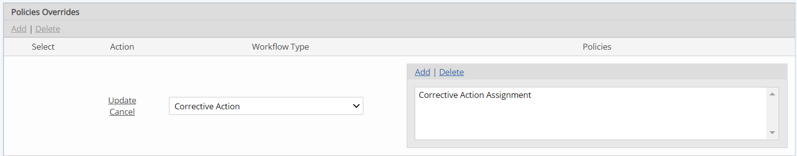

Policy overrides specified in a Workflow Override can be used to change the notification policies applied to the workflow type. This allows you to set up different notification schedules for workflows associated with a particular division or facility. Overrides are inherited so will automatically apply to workflows associated with the object’s children.
To change the notification policies for object-related workflows:
Select the Workflow Policies Overrides tab.
Policies applied to the workflow type are not shown in the Workflow Overrides editor. You will need to view the workflow type to see these.
Select the policy or policies to associate from the selection window. Click Select Policies.
Selected policies will replace all policies associated with the original workflow defnition. If you want to retain any of the original policies, you will need to select them along with any new policies to associate.
Click Update.
